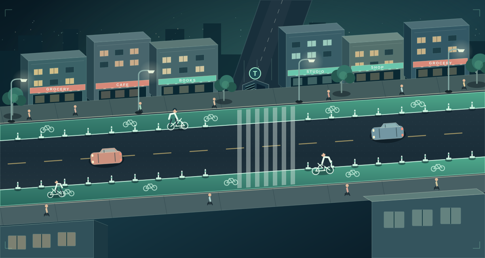
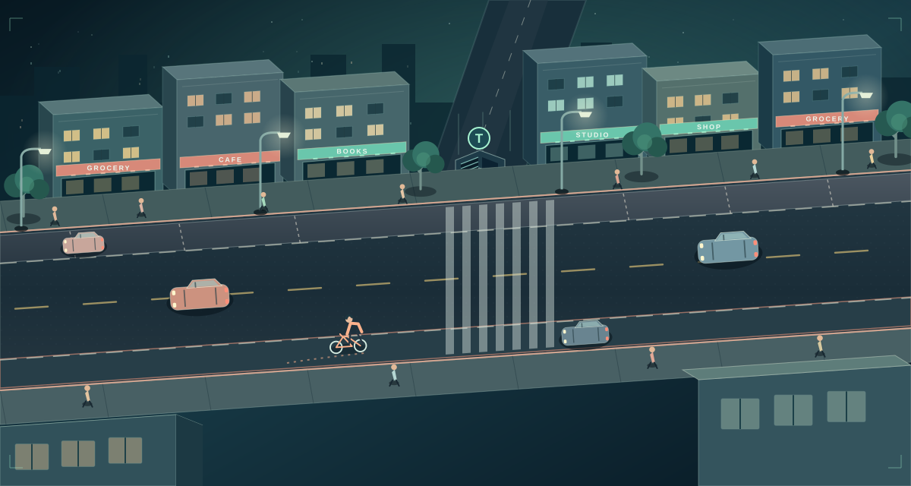

◆ OBSERVED / CITY OF TORONTO2025 · ONE COUNTER
3,524 / dayAverage cyclist passages at the permanent Bloor counter west of Huron Street. This is a scale cue, not unique riders, corridor trips, or a removal effect.
Read the City source ↗AGENTS OFFLINE · PREPARED REPLAYS
Choose a changed decision to follow its committed events on the map.
Survey-style reaction, not a forecast.
This is the trace-backed TTC replay. Select a person to see their decisions, inspect supporting evidence, then edit an assumption and rerun. The map above shows Bathurst–Spadina context; this inspector still uses its earlier synthetic district. Its own replay and charts share one event trace.
The inspector is a deterministic, rule-based prototype. Its personas and choices are synthetic. A human note entered here belongs to this browser session; it is not a Papiers annotation unless separately retrieved and verified.
A protected cycle track connects a person to more than a route. Compare a seeded synthetic run, then explore other possible responses. The street visuals are schematic; the event ledger and charts use recorded choices.


These selectable branches show additional mechanisms that are not choices in the seeded run. The recorded decisions and their event paths are directly below.
Choose a changed decision to follow its committed events.
Average cyclist passages at the permanent Bloor counter west of Huron Street. This is a scale cue, not unique riders, corridor trips, or a removal effect.
Read the City source ↗Visitor mode and merchant surveys show why arrival mix matters. Bloor and the Danforth comparison both improved after installation; those data cannot predict sales after removal.
Inspect the retail study ↗Local removal cost, injuries, emissions and actual shop margin need a street design, exposure and transaction data. The City’s multi-corridor cost estimate is not a Bloor-segment estimate.
See assumptions & sources ↗Choose a connected sector to inspect its illustrative comparison and evidence boundary.
People reconsider a trip when the cost of reaching it changes. Some keep riding, some switch modes, and others stay home.
Illustrative chart values will appear here.
Observed Toronto context; response size is an illustrative assumption.
Five connected sectors, one illustrative comparison. Choose any chart to inspect its mechanism and evidence boundary.
Steven's research loop compares synthetic persona answers with a held-out survey check set. Every trial and the human decision are recorded. This measures survey-answer likeness, not whether a Toronto policy prediction is correct.
Loading the recorded trials…
Loading saved agent reactions…
These saved reactions are from synthetic US persona cards with assigned transit contexts. They are separate from the TTC city's seeded actors and are not Toronto survey data, observed behaviour, or inputs to its event trace. Their near-uniform opposition motivated the later persona evaluation.
Counterfactual Lab is a research prototype. Our city is a way to inspect assumptions, mechanisms and tradeoffs—not to certify a real-world prediction.
ASK ANOTHER QUESTION ↗Identifying the policy, affected people, and the change to test.